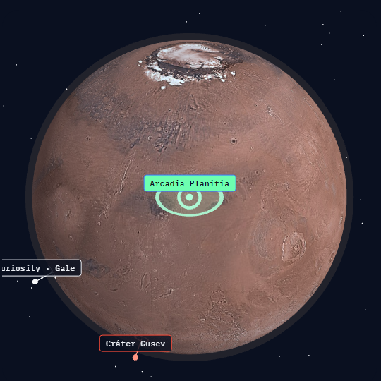
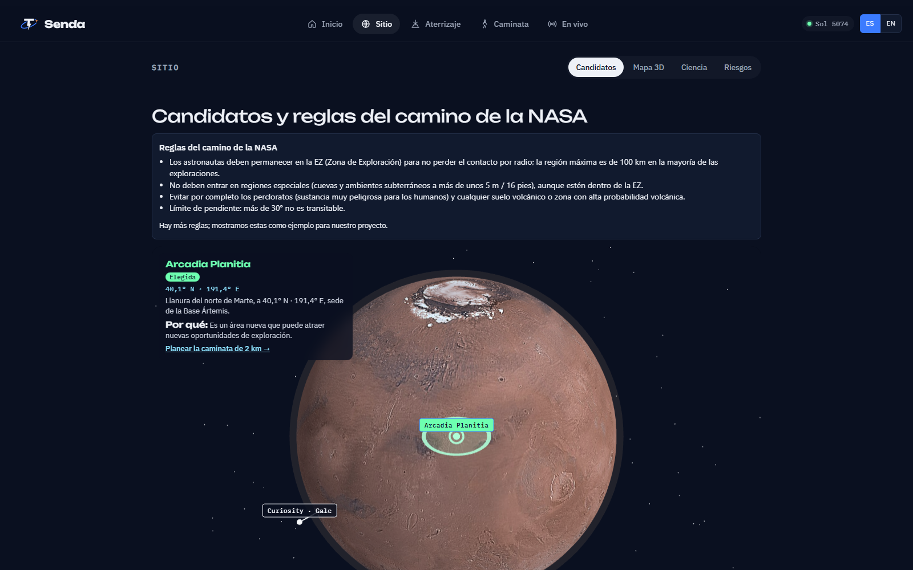
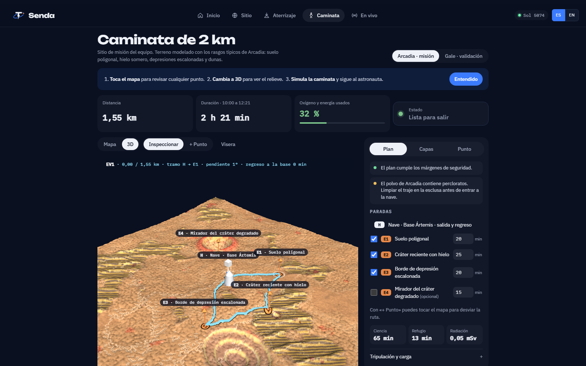
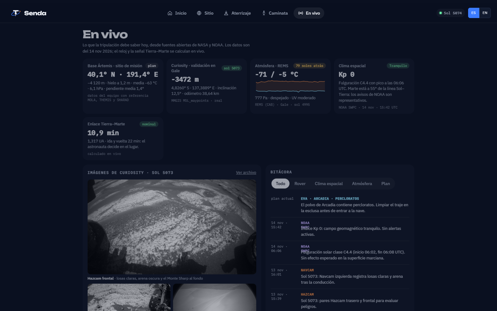

Planning the first human walk on Mars, from open data to the first footprint.
A radio message takes 4 to 22 minutes each way, so the astronaut has to decide on site.
Slopes too steep to walk, toxic perchlorates in the dust, radiation and dust storms.
Terrain, ice, weather, radiation and rover data live in different NASA and NOAA portals.
Mission planners need one clear map that puts it all together and answers a simple question: is this walk safe, and can the crew get back in time?
Inspired by open-source intelligence (OSINT) dashboards: layered maps, live feeds, a mission log and a site dossier, all in one place.
Bilingual (ES/EN), works on phones and keeps working offline.


| Curiosity traversereal | MMGIS · MSL_waypoints |
| Weather at Galereal | REMS · mars.nasa.gov |
| Rover raw imagesreal | mars.nasa.gov raw_image_items |
| Space weatherreal | NOAA SWPC |
| Terrain, ice, minerals | Mars Trek · MOLA · THEMIS · SHARAD · HiRISE · CRISM |
| Mars globe | Viking MDIM 2.1 |

Our mission site: flat northern plains with shallow water ice about 1 m below the surface, a resource for future crews.
The terrain is modeled from the features MOLA, THEMIS and SHARAD show for this region.
Our validation site: we run the same tools on the real path Curiosity drove, with its own weather readings and images.
If Senda's rules work where a rover already went, we can trust them where people will go.
total distance driven by Curiosity, from its real waypoints (MMGIS)
min / max air temperature at Gale (REMS)
latest rover images shown in the live feed